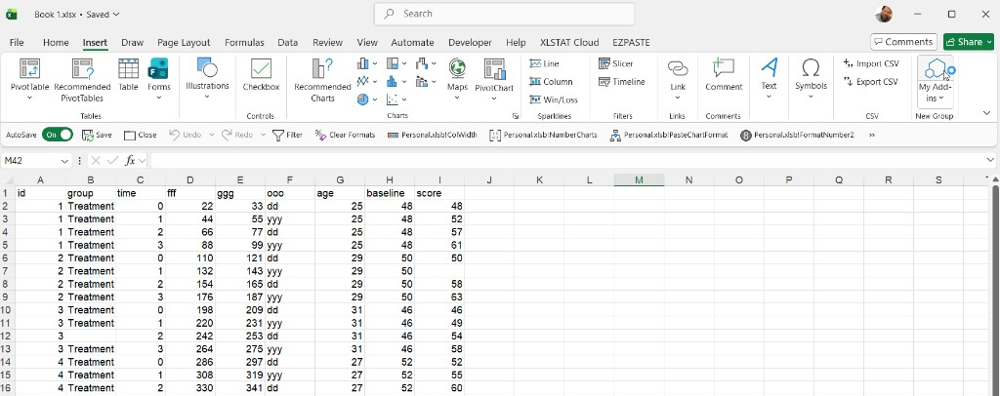

How it works
Analysis where
you work
A cloud-powered statistical engine led by the Office.js taskpane hub
The main entry to Statistico™Interactive apps is the Excel Office.js taskpane. Open Analytics, Calculators, and Applications from one interface.*
Cloud engine + taskpane-first experienceStart in Excel
Statistico™Interactive is designed for a hub-first flow: Office Add-in mode (inside Excel) is the main entry for all app families.
Excel Office.js Taskpane (Primary entry)
Find Statistico™Interactive in the Excel Add-ins store (Insert → Get Add-ins). One click installs it and it appears in your ribbon immediately as the main hub for Analytics, Calculators, and Applications.
Unified taskpane navigation
From the taskpane hub, move across Analytics, Calculators, and Applications without changing context. This keeps onboarding simple and focused.
Admin / evaluation options
Teams can deploy centrally via Microsoft 365 Admin Center, and evaluators can sideload manifests in Excel when required.
The analysis engine runs in the cloud — nothing heavy is installed locally. In Office.js Excel mode, model state is written back into the workbook so results regenerate when reopened.
Three ways to pass data to the analysis
Selection
Highlight any cells in your sheet and send the selected range directly to the analysis — the most intuitive starting point.
Used Range
Let Statistico™Interactive detect the full extent of populated cells on the active sheet automatically — no manual selection needed.
Named Range
Type or pick any Excel named range from the taskpane — ideal for structured workbooks where data areas are already defined and labelled. Named ranges can be dynamic: convert your range to an Excel Table (Insert → Table) and it expands automatically as rows are added, or define the name with an OFFSET / INDEX formula for the same effect. Statistico™Interactive resolves the range at analysis time, so growing datasets are picked up automatically.
Run Analysis
Your data source
Start in Excel with your worksheet data and stay in one guided flow from input to results.
Hub-first entryStatistico™Interactive Interface
Interactive analysis launched from the Office.js taskpane as the main interface for all Statistico™Interactive app families.
Interactive analysisResults & Insights
Charts and summaries respond in real time. Excel mode persists into workbook so work resumes cleanly.
Realtime outputFive-step flow from launch to results
Open the popup slideshow for a clear step-by-step walkthrough with full-size screens.
Built-in Productivity Tools
Every analysis view ships with three workflow utilities accessible from the sidebar — so your work is always shareable, reproducible, and auditable.
Export Report
Generate a standalone HTML report that embeds rich live snapshots of every selected analysis section — charts, stats tables, and all — in a single self-contained file anyone can open in a browser.
- Available across all analytics modules
- Controls frozen for clean, static presentation
- Share by email — no Excel or Statistico™Interactive required
- Future: PDF & Word export formats
Save Configuration
Saves the settings from the configuration dialog — variable mappings, method choices, threshold values — together with the Excel range address. Re-open and reload to re-run the exact same analysis on the same range, even if the underlying data has changed.
- Saves config-dialog settings and the source range
- Re-run on the same range after data updates
- Restores the exact analysis setup in one click
- Available in modules that expose a config dialog
View Data
Inspect the exact data driving the analysis in a scrollable table overlay — switch between all observations and the filtered/used subset to understand precisely what each chart reflects.
- Toggle: All observations vs. Used observations
- Shows variable name, row count, and values
- Confirms data quality before drawing conclusions
- Available in every analytics module
What Powers It
Cloud computation
All calculations run in a secure cloud engine. Nothing is installed locally — your machine stays light.
Dual interface
Run in a taskpane-centered interface designed for consistent, guided analysis flows.
Worksheet memory
Your model configuration and settings are written back into a dedicated area of your workbook — reopen the file and results regenerate instantly. Your original data and existing sheets are never modified.
No local install
No desktop package required. Browser and add-in paths share the same cloud engine.
Continuous flow
From raw data to interpreted insight in one unbroken, interactive session.
Is It Safe?
Security applies across Statistico™Interactive runtime surfaces. The same encrypted cloud computation layer is used throughout.
Data transfer is encrypted
All communication between the add-in and the cloud engine uses TLS encryption. Your data is transmitted securely and is never stored on our servers after the session ends.
Microsoft sandboxed environment
Office Add-ins run in an isolated sandbox inside Excel. Access is scoped to what you explicitly provide.
No account required to start
You can explore Statistico™Interactive without creating an account. No personal data is collected during a standard analysis session.
Enterprise-ready deployment
IT administrators can deploy and control Statistico™Interactive centrally via Microsoft 365 Admin Center, with the same governance policies applied to all other Office Add-ins in your organisation.
Stateless cloud processing
Computation requests are stateless — each analysis call is independent. No session data, no identifiable information, is retained in the cloud after a result is returned.
Results stay in your workbook
Your model configuration is written back into a dedicated area of your Excel workbook — results regenerate instantly when you reopen it. Your original data and existing sheet content are never modified.
Wrap-up
Statistico™Interactive runs in the cloud with the Office.js Excel taskpane as the primary entry to all apps. This keeps workflows consistent and focused, without local installs or workflow fragmentation.
See it live in the Analytics Hub